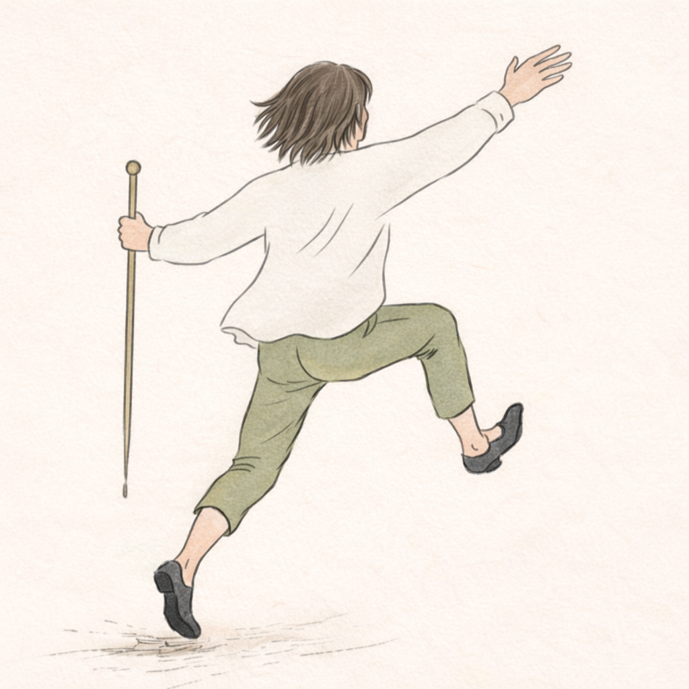

When pressure rises, what happens to timing, contact, and coordination?
Many skilled people know exactly what to do—and still lose access to it when it matters most.
In stressful encounters, hesitation, over-control, delayed responses, and strained interaction can appear. The issue is often not a lack of knowledge. Something shifts in the relationship between you, others, and the situation.
You will work with what changes in timing, coordination, and contact when demand increases. In short: how you orient and act with others when conditions shift—under pressure, in contact, in real time.

A three-day workshop in Zurich exploring how we orient and act with others when conditions shift.
16–18 October 2026 · Zurich · Limited to 13 participants
This is where the work happens in practice. Simple tasks, live feedback, small group. You work with what changes in timing, coordination, and contact when demand increases — in yourself and with others.
Leading & Following is the setting we use: a precise way to make these dynamics visible. The workshop does not invent them. You already meet them in meetings, performance, leadership moments, and team coordination. Here they become clear enough to work with.
In short: how you orient and act with others when conditions shift — under pressure, in contact, in real time. That is what the three days are for.
Direct, physical, feedback-rich practice. Not therapy. Not a motivational seminar. Not performance display or charisma training.
The dynamics are already in your work. The workshop makes them visible.
Most people come with years of training, experience, and professional judgment. Under pressure, what fails is often not judgment itself but access: to timing, to contact, to a clear next move while something is happening between you and others. The subject is how you navigate human situations in relationship when conditions change. Leading and following are the doorway into that — not the destination.
How the workshop works
You work through practical tasks with immediate feedback. Movement and partner work are used to see what is happening — hesitation, effort, timing, adaptation — not as an aesthetic performance. Two facilitators observe from complementary angles: what happens in you under pressure, and what happens in the interaction. Practice, observation, adjustment — repeated until shifts show in action.
For whom
- You work in roles where timing, interaction quality, and decisions under pressure matter.
- You are willing to observe automatic reactions and adjust them in live practice.
- You value direct feedback, repeated application, and noticeable shifts in coordination.
- You are willing to show up — physically present and focused — in a small committed group.
Not for whom
- People looking for a passive seminar format with minimal practical engagement.
- People expecting relaxation-oriented retreat programming or retreat atmosphere.
- People seeking performative presentation or charisma-focused training.
- People not ready for direct feedback and iterative adjustment in real interaction.
We use a short application and a conversation to confirm fit — for you and for the group.
Real-time Feedback,
kleine Gruppen.
Praktische Arbeit mit echter menschlicher Dynamik.
Direct Feedback
Immediate adjustment based on physical and interpersonal dynamics observed in the moment by experts.
Small Groups
A maximum of 15 participants ensures individual attention, high-density learning, and safety.
Live Dynamics
Working with real presence and physical contact, not simulated scenarios or abstract models.
What Happens in 3 Days
Three progressive working phases. The format stays constant while interaction demands increase.
Day 1 - Orientation in Practice
FOCUS
Arriving in the work format and noticing how regulation and interaction organize in real time.
WHAT PARTICIPANTS WORK ON
Attention in contact, interruption of automatic reactions, and clear sensing of effort, timing, and relational signals.
LEARNING CONDITION
Short practice rounds with immediate feedback, repeated until changes are observable in action.
Day 2 - Coordination in Live Complexity
FOCUS
Working in denser interaction settings where timing, adaptation, and precision matter continuously.
WHAT PARTICIPANTS WORK ON
Leading and following transitions, contact quality, pacing changes, and coordinated response under shifting demands.
LEARNING CONDITION
Partner and small-group tasks with live feedback loops, adjustment, and immediate re-application.
Day 3 - Quality Under Pressure and Transfer
FOCUS
Maintaining functional quality when cognitive, social, and performance load increase.
WHAT PARTICIPANTS WORK ON
Stability of coordination, decision timing, and reliable interaction quality in higher-demand working situations.
LEARNING CONDITION
Structured pressure conditions with focused feedback, then direct transfer into each participant's real professional context.
Integrated guidance from both facilitators runs through all three days. Participants receive integrated feedback across regulation, coordination, and interaction quality as interaction demands increase.
Expected Outcomes /
Not Promised Outcomes
This workshop works through repeated observation, interaction, and adjustment in live conditions. The objective is not performance perfection, but more reliable coordination under changing demands.
Expected Outcomes
- Clearer perception of effort and timing in live interaction.
- More stable coordination under interaction pressure.
- Improved recognition of automatic reaction patterns.
- Greater adaptability during changing relational demands.
- More efficient use of attention, movement, and communication.
- Better transfer between workshop practice and real professional situations.
Not Promised
- This workshop is not intended as a therapy format.
- This workshop is not intended as a motivational seminar.
- This workshop is not intended as performance display or charisma training.
- This workshop is not intended to promise symptom elimination.
- This workshop is not intended to replace long-term professional practice in participants' own fields.
Why We Work Together
Vincent
INTERACTION TIMING & EXPRESSION IN ACTIONVincent works on timing and coordination in live interaction, so intention is expressed clearly and without delay.
OPERATIONAL FOCUS
- Relational timing: when to lead, follow, pause, or adapt.
- Signal clarity in posture, movement direction, and contact quality.
- Functional anatomy, gravity use, and efficient action in partner dynamics.
IN-SESSION RESPONSIBILITY
He tracks interaction quality in real time, gives direct feedback, and calibrates choices through repeated partner-based tasks.
PRIMARY EMPHASIS
Lifelong hornist. 35+ years at Musikhochschule Detmold. Feldenkrais teacher and soloist integrating functional anatomy, gravity, tango, and Nonviolent Communication.
Ulf
SELF-REGULATION & ACCESS UNDER PRESSUREUlf works on internal regulation so trained skill remains accessible when pressure rises.
OPERATIONAL FOCUS
- Regulation load in breathing, tone, and muscular organization.
- Economy of effort during contact, movement, and decision moments.
- Transfer from workshop drills to professional performance situations.
IN-SESSION RESPONSIBILITY
He observes where access drops under stress, gives immediate feedback, and guides precise adjustments for the next interaction cycle.
PRIMARY EMPHASIS
Former orchestral musician; ten years in professional orchestras. Subsequent work with orchestras including NDR Hamburg, RSO Wien, and the Porto Alegre Symphony Orchestra (Brazil) as an Alexander Technique teacher and movement coach. Ten years at Musikhochschule Stuttgart. Twenty years in the Zurich spine and trauma practice of Dr. Holdener, MD, focused on back pain and whiplash. Master's in Public Health.
CO-FACILITATION LOGIC
This workshop runs as a dual observation system: internal regulation and external interaction are monitored together in the same live process.
When Vincent leads an interaction task, Ulf tracks regulation load and access stability.
When Ulf leads regulation work, Vincent tracks timing, coordination, and communicative precision.
Participants receive integrated feedback across regulation, coordination, and interaction quality.
Practical Details
Common Questions
Is this a movement workshop?
Yes. Movement is one of the ways we explore what happens in ourselves and between people. The focus is not movement as an aesthetic end in itself, but on what becomes visible through movement, interaction, and feedback.
Do I need a specific background?
The workshop is open to anyone in a leading or performing role who needs to maintain precision under pressure. Specific athletic or artistic training is not required.
Apply for the Workshop
Participation is intentional. This workshop works best for people who are willing to observe carefully, work precisely, and stay engaged in live interaction. The application process is used for alignment, not exclusivity theater.
STEP 1
Application
Short written application or expression of interest.
STEP 2
Conversation / Confirmation
Clarification of fit, expectations, logistics, and remaining questions.
STEP 3
Preparation
Participants receive practical preparation details before the workshop.
The workshop is intentionally small enough to allow precise observation and direct feedback.
Form integration currently routes via email fallback until final Fluent Forms URLs are connected.